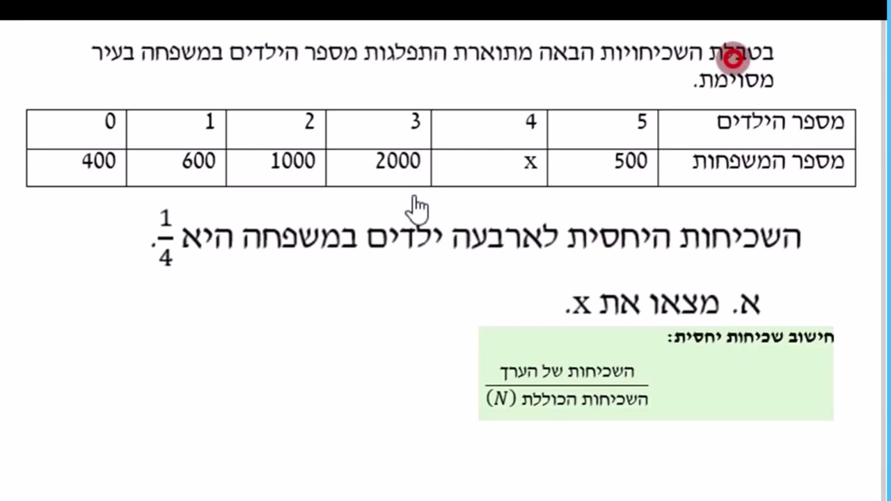

בתחנות הקודמות ספרנו כמה יש מכל דבר. עכשיו נשאל שאלה חדשה:
15 תלמידים — זה הרבה או מעט? מסתבר שאי אפשר לענות על זה
בלי לדעת עוד מספר אחד. בעמוד הזה נגלה איזה.
בסוף העמוד תדעי: לחשב שכיחות יחסית ולכתוב אותה כשבר,
כשבר מצומצם וכאחוז · לעבור מאחוז לכמות ובחזרה · לפתור טבלה עם נעלם בעזרת משוואה.
בשיעור חינוך שאלו מי רוצה יום ספורט, ו-15 תלמידים בחרו כדורסל.
זה הרבה?
אי אפשר לדעת — כי חסרה השאלה החשובה: מתוך כמה?
אם שאלו כיתה של 20 — אז 15 מתוך 20 זה רוב הכיתה. הרבה.
אם שאלו שכבה של 300 — אז 15 מתוך 300 זה קומץ קטן. מעט.
אותם 15 תלמידים בדיוק, ומשמעות הפוכה לגמרי.
המהות
שכיחות לבד היא חצי סיפור — היא אומרת רק "כמה".
שכיחות יחסית משלימה אותו: החלק מתוך השלם —
כמה בחרו, ביחס לכמה נשאלו בסך הכל.
2הנוסחה
כדי להפוך שכיחות לשכיחות יחסית עושים דבר אחד: מחלקים אותה בסך הכל.
הצבעים כאן הם אותם צבעים שמלווים אותנו בכל התחנות:
שכיחות יחסית
$$\text{שכיחות יחסית}=\frac{\rule{0pt}{1.15em}\textcolor{#1D6FA5}{\text{השכיחות של הערך}}}{\textcolor{#8A6D1B}{\text{סך כל הנתונים}}}$$
כחול — הקבוצה שמדברים עליה (כמה בחרו כדורסל) צהוב — הסך הכל (כמה נשאלו בכלל)
נחזור לכיתה של 20: מתוכם 15 בחרו כדורסל. נציב בנוסחה —
והמספר הירוק מראה בכל מעבר במה חילקנו או כפלנו, למעלה ולמטה יחד:
שימי לב ששלוש הצורות אומרות בדיוק אותו דבר:
\(\frac{15}{20}\) הוא השבר כמו שהוא,
\(\frac{3}{4}\) הוא אותו שבר אחרי צמצום,
ו-75% זו אותה כמות בשפה של אחוזים.
שלוש שפות — סיפור אחד: שלושה רבעים מהכיתה.
בדיקת ביטחון
אם מחשבים את השכיחויות היחסיות של כל הערכים בטבלה —
הסכום שלהן תמיד יוצא 1 (או 100%).
סיימת תרגיל? חברי את כל השכיחויות היחסיות. יצא 1 — כנראה שהכל נכון.
יצא משהו אחר — יש טעות ששווה לחפש.
3מאחוז לכמות ובחזרה
אחוז הוא בסך הכל שכיחות יחסית שכתובה עם מכנה 100.
לכן יש כאן שני כיוונים של חישוב, וכל תרגיל שייך לאחד מהם.
א. נתון האחוז — מחפשים כמות
"בכיתה 40 תלמידים, ו-30% מהם באים בהסעה. כמה תלמידים באים בהסעה?"
קודם מזהות מי זה מי: הסך הכל = 40 התלמידים בכיתה, והאחוז = 30%.
לוקחים את הסך הכל וכופלים באחוז:
$$\textcolor{#2E7D32}{\text{הכמות}}=\underbrace{\textcolor{#8A6D1B}{40}}_{\textcolor{#8A6D1B}{\text{הסך הכל — כל הכיתה}}}\cdot\underbrace{\frac{\textcolor{#C2408C}{30}}{100}}_{\textcolor{#C2408C}{\text{האחוז}}}=\frac{1200}{100}=\textcolor{#2E7D32}{12}$$
כלומר 12 תלמידים באים בהסעה.
ב. נתונות שתי כמויות — מחפשים אחוז
"12 תלמידים מתוך 40 באים בהסעה. איזה חלק מהכיתה זה?"
מחלקים את החלק בסך הכל, ואז מביאים את השבר למכנה 100 —
קודם מצמצמים, ואז מרחיבים:
חזרנו בדיוק לנקודת ההתחלה — שני הכיוונים הם אותה נוסחה, קדימה ואחורה.
איזה כיוון זה?
נתון האחוז ומבקשים כמות — כופלים את הסך הכל באחוז.
נתונות שתי כמויות ומבקשים אחוז — מחלקים את החלק בסך הכל.
4טבלה עם חור — שכיחות יחסית עם נעלם
עד עכשיו חישבנו שכיחות יחסית מתוך טבלה מלאה.
אבל בשיעורי הבית מחכה גרסה מתוחכמת יותר: טבלה עם חור —
מספר אחד חסר, ובמקומו כתוב X.
ואז נותנים לנו את השכיחות היחסית המוכנה, ואנחנו עובדות אחורה
כדי לגלות את X. הנה התרגיל מהסרטון, בדיוק כמו שהוא:
התרגיל
מורה בדקה כמה עטים יש בקלמר של כל ילד בכיתה, ורשמה את התוצאות בטבלה.
נתון כי השכיחות היחסית של תלמידים עם עט אחד בקלמר היא
\(\frac{1}{7}\).
מצאי את X ואת מספר הילדים בכיתה.
כמות העטים בקלמר
0
1
2
3
4
5
מספר הילדים
3
5
15
7
3
X
השורה העליונה — הערכים (כאן: כמות העטים) · השורה התחתונה — השכיחות (כמה ילדים).
X = כמה ילדים עם חמישה עטים — את זה אנחנו עדיין לא יודעות.
כמה ילדים יש בסך הכל?
מחברים את מה שכן ידוע: \(3+5+15+7+3=33\),
ועוד ה-X שעדיין לא ידוע. סך הילדים בכיתה הוא \(33+X\).
כותבים את השכיחות היחסית כמשוואה.
עם עט אחד יש 5 ילדים, ולפי הנתון החלק שלהם מתוך הכיתה הוא שביעית:
$$\frac{\underbrace{\textcolor{#1D6FA5}{5}}_{\textcolor{#1D6FA5}{\text{ילדים עם עט אחד}}}\rule[-1.6em]{0pt}{0pt}}{\underbrace{\textcolor{#8A6D1B}{33+X}}_{\textcolor{#8A6D1B}{\text{כל ילדי הכיתה}}}}=\frac{1}{7}$$
זו בדיוק הנוסחה מסעיף 2 — רק שהפעם המכנה מכיל נעלם.
כפל בהצלבה.
כל מונה נכפל במכנה של הצד השני:
\(5\cdot 7=1\cdot(33+X)\),
כלומר \(35=33+X\).
מעבירים את 33 אגף ומקבלים \(X=2\) —
שני ילדים עם חמישה עטים.
עונים על מה ששאלו ובודקים.
מספר הילדים בכיתה: \(33+2=35\).
נרשום את הטבלה המלאה:
כמות העטים בקלמר
0
1
2
3
4
5
מספר הילדים
3
5
15
7
3
2
בדיקה: \(\frac{5}{35}=\frac{1}{7}\) ✓ —
בדיוק השכיחות היחסית שנתנו לנו.
זו כל השיטה: לכתוב את הסך הכל עם X, להציב בנוסחת השכיחות היחסית,
ולפתור משוואה פשוטה. בסרטון קוראים לזה "הנדסה לאחור" —
מישהו חישב שכיחות יחסית, ואנחנו משחזרות מה היה בטבלה שלו.
5✏️ תרגול — משלב לשלב
שלב 1 · ביחד
שכיחות יחסית מסקר כיתתי
בסקר כיתתי, מתוך 30 תלמידים18 באים לבית הספר באופניים.
מה השכיחות היחסית של הבאים באופניים?
נסי לנחש את השלב הבא לפני שאת פותחת אותו.
שלב ראשון — כותבים את השבר
הקבוצה למעלה, הסך הכל למטה:
$$\frac{\underbrace{\textcolor{#1D6FA5}{18}}_{\textcolor{#1D6FA5}{\text{הקבוצה — הבאים באופניים}}}\rule[-1.6em]{0pt}{0pt}}{\underbrace{\textcolor{#8A6D1B}{30}}_{\textcolor{#8A6D1B}{\text{הסך הכל — כל התלמידים}}}}$$
וזה בדיוק המבנה של הנוסחה למעלה.
שלב שני — מצמצמים
המספר הכי גדול שמחלק גם את 18 וגם את 30 הוא 6 —
אז מחלקים בו למעלה ולמטה יחד:
$$\frac{18}{30}=\frac{18:\textcolor{#2E7D6B}{6}}{30:\textcolor{#2E7D6B}{6}}=\frac{3}{5}$$
אותו יחס בדיוק, רק במספרים קטנים: שלושה מתוך כל חמישה.
שלב שלישי — עוברים לאחוזים
אחוז פירושו מכנה 100 — ומ-5 מגיעים ל-100 בכפל ב-20.
מה שעושים למכנה עושים גם למונה:
$$\frac{3}{5}=\frac{3\cdot\textcolor{#2E7D6B}{20}}{5\cdot\textcolor{#2E7D6B}{20}}=\frac{60}{100}=60\%$$
כלומר 60% מהכיתה באים באופניים — יותר מחצי, וזה גם נשמע הגיוני
כי 18 הוא יותר מחצי מ-30.
שלב 2 · לבד עם רשת
מאחוז לכמות
בשכבה 60 תלמידים.
15% מהם חברים במקהלה.
כמה תלמידים חברים במקהלה?
בדיקת היגיון: 15% זה קצת פחות משישית,
ושישית מ-60 היא 10 — אז 9 מתאים ✓
שלב 2 · לבד עם רשת
מהכמות אל הסך הכל
בכיתה מסוימת 14 תלמידים הם
40% מהכיתה.
כמה תלמידים יש בכיתה?
התשובה שלי:
הצגי פתרון מלא
אותו קשר — הפעם הנעלם הוא הסך הכל, \(N\):
$$\underbrace{\textcolor{#8A6D1B}{N}}_{\textcolor{#8A6D1B}{\text{הסך הכל — הנעלם}}}\cdot\underbrace{\frac{\textcolor{#C2408C}{40}}{100}}_{\textcolor{#C2408C}{\text{האחוז}}}=\underbrace{\textcolor{#1D6FA5}{14}}_{\textcolor{#1D6FA5}{\text{הכמות}}}$$
$$0.4\cdot\textcolor{#8A6D1B}{N}=\textcolor{#1D6FA5}{14}\;\Longrightarrow\;\textcolor{#8A6D1B}{N}=\frac{\textcolor{#1D6FA5}{14}}{0.4}=35$$
בכיתה 35 תלמידים.
(דרך שנייה: \(14\cdot\frac{100}{40}=35\) — אותה תשובה.)
בדיקה:\(\frac{14}{35}=\frac{2}{5}=40\%\) ✓
שלב 2 · לבד עם רשת
שכיחות יחסית מתוך דיאגרמת עמודות
חזרנו ליום הספורט — הפעם ההצבעה נערכה בשכבה אחרת, ואת התוצאות ציירו
בדיאגרמה. כל ענף קיבל עמודה בצבע משלו:
השכיחות — כמה בחרו
כדורסלכדורגלשחייהמחול
הערכים — ענף הספורט
ההצבעה ליום הספורט בשכבה. שם הענף כתוב מתחת לעמודה שלו, על הציר.
הענפים הם נתונים שמיים — אין ביניהם סדר של גודל, ולכן הסדר על הציר הוא רק סדר של רשימה.
כמה תלמידים הצביעו בסך הכל?
מה השכיחות היחסית של כדורסל, באחוזים?
הצגי פתרון מלא
נעביר את הנתונים מהדיאגרמה לטבלה — כל עמודה שומרת על הצבע שלה:
ענף הספורט
כדורסל
כדורגל
שחייה
מחול
מספר התלמידים
15
20
10
5
הסך הכל — סכום כל העמודות:
\(15+20+10+5=\textcolor{#8A6D1B}{50}\) תלמידים.
השכיחות היחסית של כדורסל — הקבוצה חלקי הסך הכל, ואז מביאים את השבר למכנה 100:
בדיקת ביטחון (מהקופסה של סעיף 2): מחשבים ככה את כל הענפים —
כדורגל 40%, שחייה 20%, מחול 10% — ומחברים:
\(30+40+20+10=100\) ✓ — כל השכבה מכוסה.
שלב 3 · כמו במבחן
מהסרטון של "פתרון פשוט" — שאלה 3
בטבלת השכיחויות הבאה מתוארת התפלגות מספר הילדים במשפחה בעיר מסוימת.
נתון כי השכיחות היחסית לארבעה ילדים במשפחה היא
\(\frac{1}{4}\).
מספר הילדים
0
1
2
3
4
5
מספר המשפחות
400
600
1000
2000
x
500
א. מצאי את x.
ב. כמה משפחות יש בעיר?
ג. מהי השכיחות היחסית של משפחה עם 2 ילדים?
ד. מהי השכיחות היחסית של משפחה עם לפחות 4 ילדים?
ה. מהי השכיחות היחסית של משפחה עם לכל היותר 2 ילדים?

התרגיל המקורי מהסרטוןהצגי פתרון מלא (כמו שכותבים במחברת)
א. שכיחות יחסית = החלק חלקי השלם, והשלם כולל את x:
$$\frac{\underbrace{\textcolor{#1D6FA5}{x}}_{\textcolor{#1D6FA5}{\text{משפחות עם 4 ילדים}}}\rule[-1.6em]{0pt}{0pt}}{\underbrace{\textcolor{#8A6D1B}{4500+x}}_{400+600+1000+2000+500\text{ ועוד }x}}=\frac{1}{4}$$
כפל בהצלבה (ה-x גם למעלה וגם למטה — זה בסדר גמור):
ד. "לפחות 4" = 4 או 5 ילדים — מחברים את שתי העמודות האלה:
מספר הילדים
0
1
2
3
4
5
מספר המשפחות
400
600
1000
2000
1500
500
$$\frac{\underbrace{\textcolor{#1D6FA5}{1500+500}}_{\textcolor{#1D6FA5}{\text{4 ילדים + 5 ילדים}}}\rule[-1.6em]{0pt}{0pt}}{\textcolor{#8A6D1B}{6000}}=\frac{2000}{6000}=\frac{1}{3}$$
ה. "לכל היותר 2" = 0, 1 או 2 ילדים — הפעם שלוש העמודות שמצד ימין:
בתחנה הבאה ניקח את הכלי הזה לאולפן החדשות: ליל בחירות, סקרים ומנדטים.
כשמדווחים "מפלגה קיבלה 25% מהקולות" — זו בדיוק שכיחות יחסית,
רק שהסך הכל הוא מיליוני מצביעים.
אינטואיציה
שכיחות יחסית תלויה גם בסך הכל — גם כשהשכיחות עולה,
האחוז יכול לרדת — אם הסך הכל גדל. תזכרי את המשפט הזה.